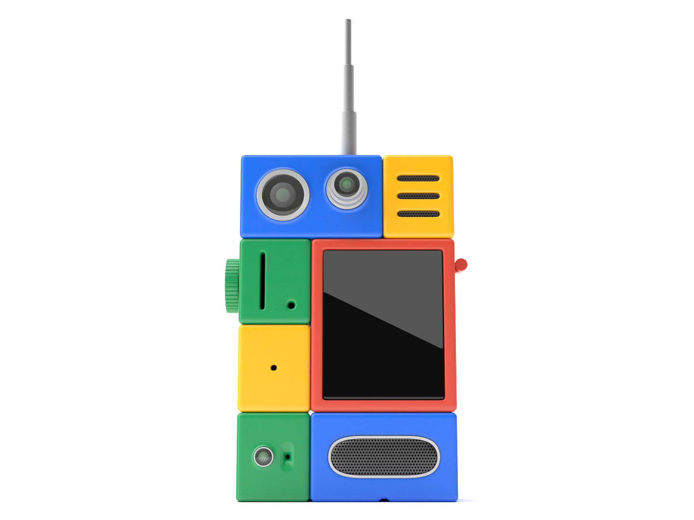
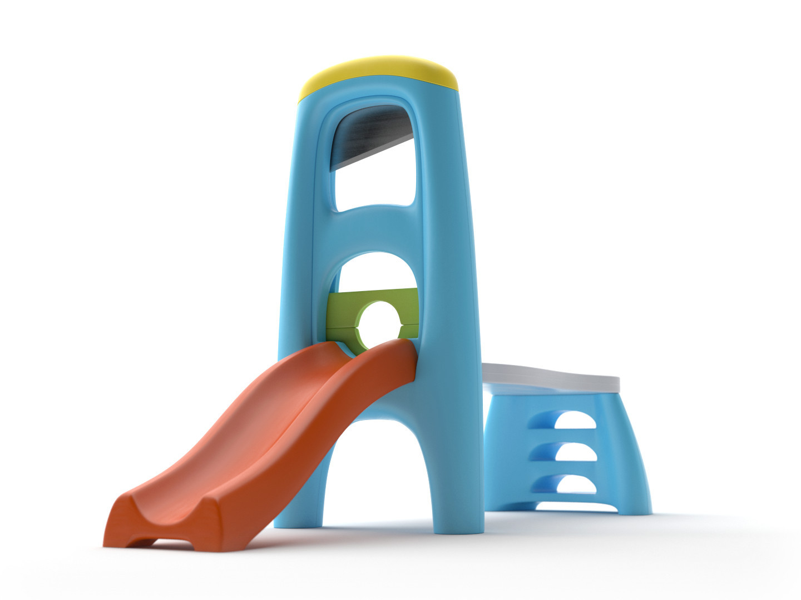
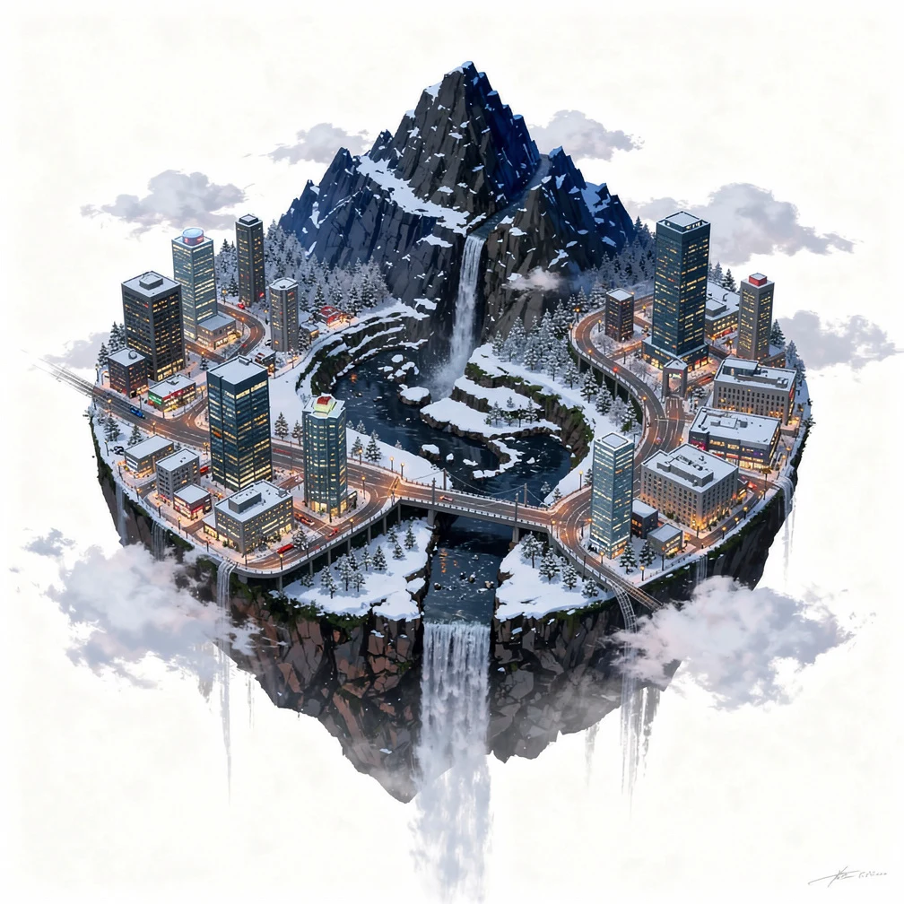
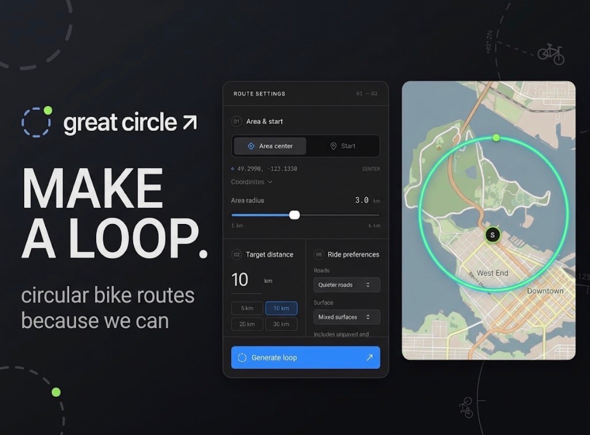
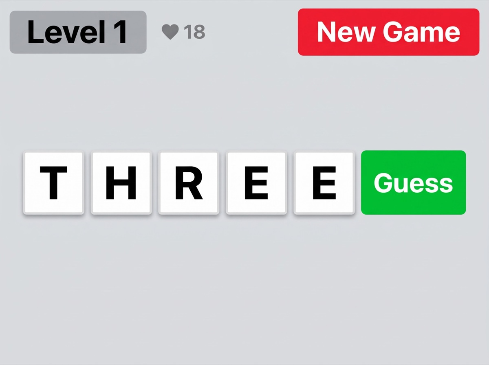
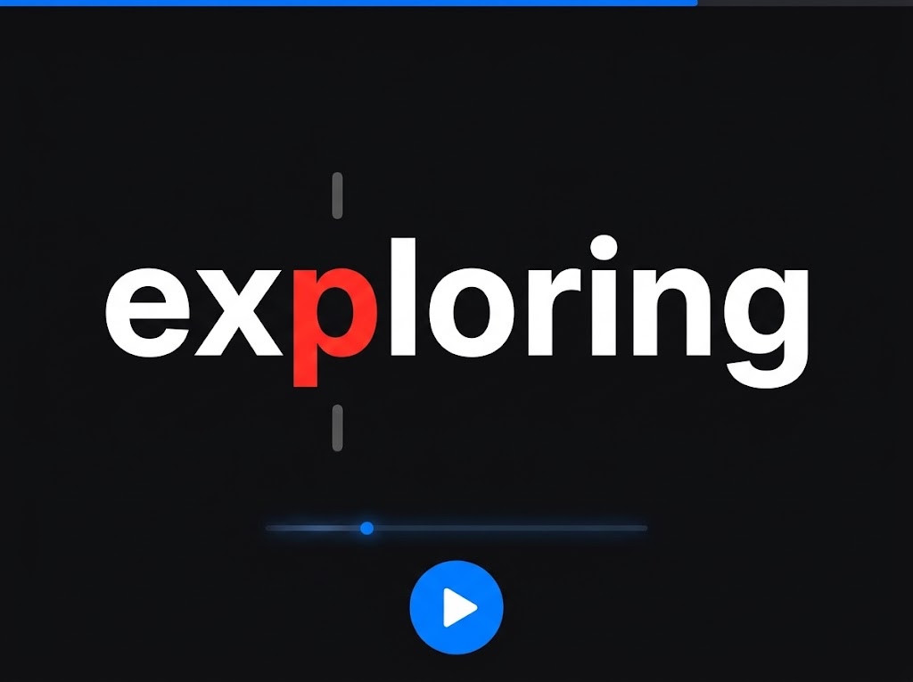
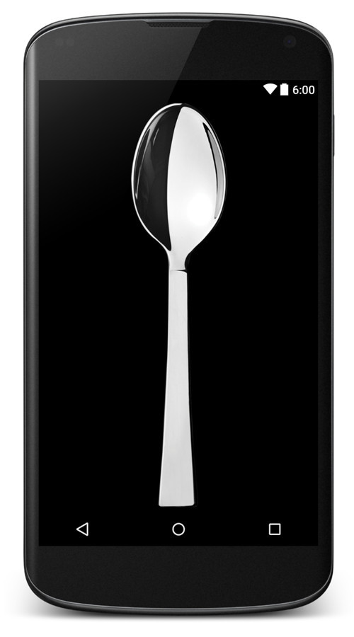

Museum of Other Realities
i started the museum of other realities, a space for creatives prototyping new forms of cultural production
Explore the museum →
i started the museum of other realities, a space for creatives prototyping new forms of cultural production
Explore the museum →
It comes in pieces. You assemble it yourself. You aren't quite sure what all the pieces do.
See the work →
An examination of the hazards of contextualizing a technology.
See the work →
Market and volatility moods become river landscapes, with weather selected for your location.
Explore the snapshots →
Plan and ride circular routes in an area you choose.
Plan a route →
Wordle with levels.
Play Verbosele →
Read EPUBs and text at an adjustable speed, with a local library.
Open the reader →
Use your phone as a spoon. It works best on a phone you can fit in your mouth.
See the work →